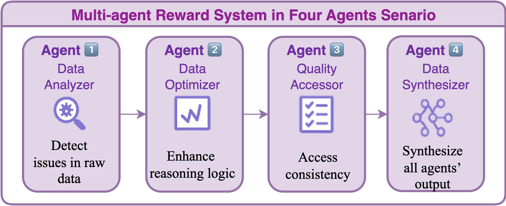
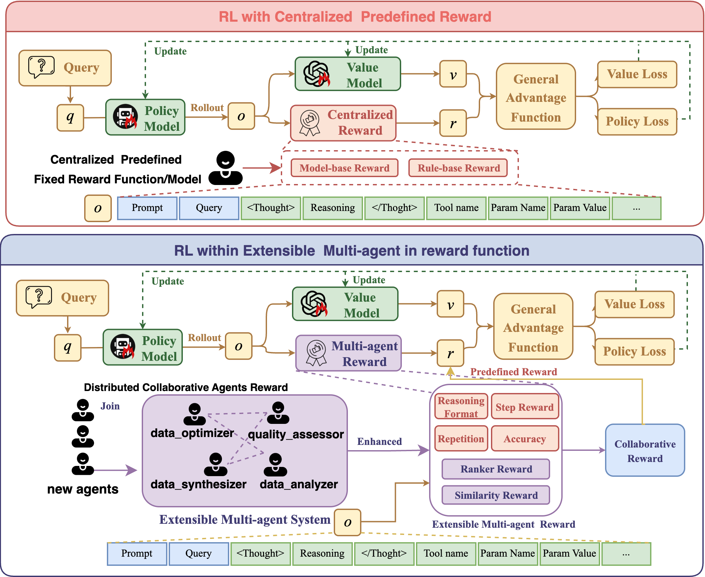
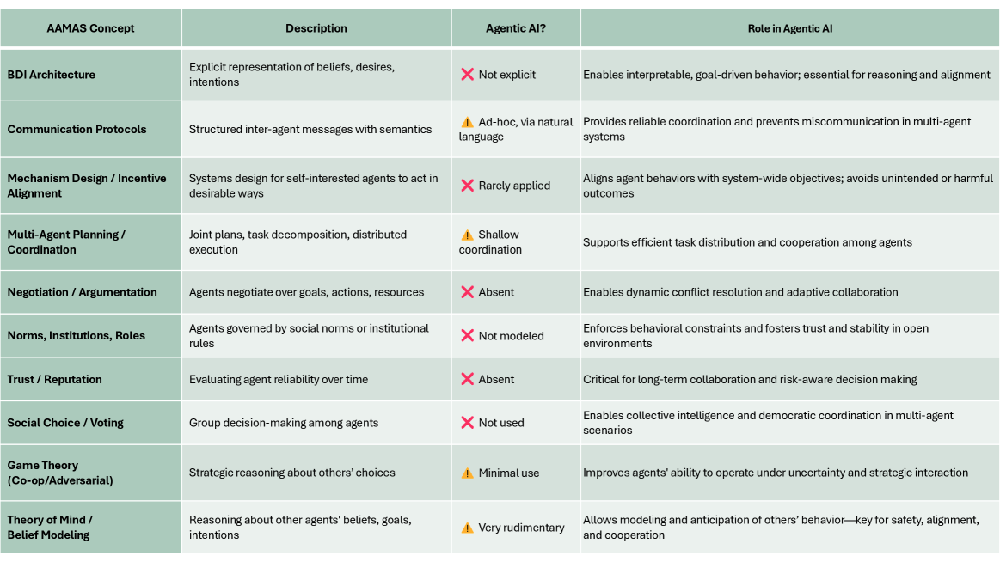

群体影响力测量框架：多智能体系统中的社会动力学分析
NUS在多智能体社会动力学方向有深厚积累，适合在Agent协作、群体决策、社会计算上合作。WMAC是AAAI 2026 Multi-Agent方向核心Workshop。

CRM框架：多智能体协作式奖励设计方法
Gradient、Columbia、Waseda联合出品，多机构资源丰富。适合在RL奖励设计、多智能体协作、推理增强上合作。RewardBench开源，易于扩展。

Agentifying框架：将Agentic AI转化为多智能体系统
Virginia Dignum是AI伦理领域领军人物，Umeå AI Policy Lab资源丰富。适合在责任AI、AI治理、多智能体伦理上合作。WMAC特邀报告。
效用感知任务分解框架：动态任务交换机制
日本团队在多Agent协作方向有深厚积累，适合在任务分解、效用优化、去中心化协调上合作。方法实用性强，易于工程落地。
多Agent图推理框架：可扩展的图结构分析方法
人大、清华联合出品，图计算资源丰富。适合在图推理、多Agent协作、大规模数据处理上合作。arXiv已发布，代码有望开源。
AgentGit框架：多智能体系统的版本控制机制
AgentGit解决了多Agent系统的工程化难题，实用性强。适合在系统可靠性、大规模部署、工程实践中合作。arXiv开源，易于集成。